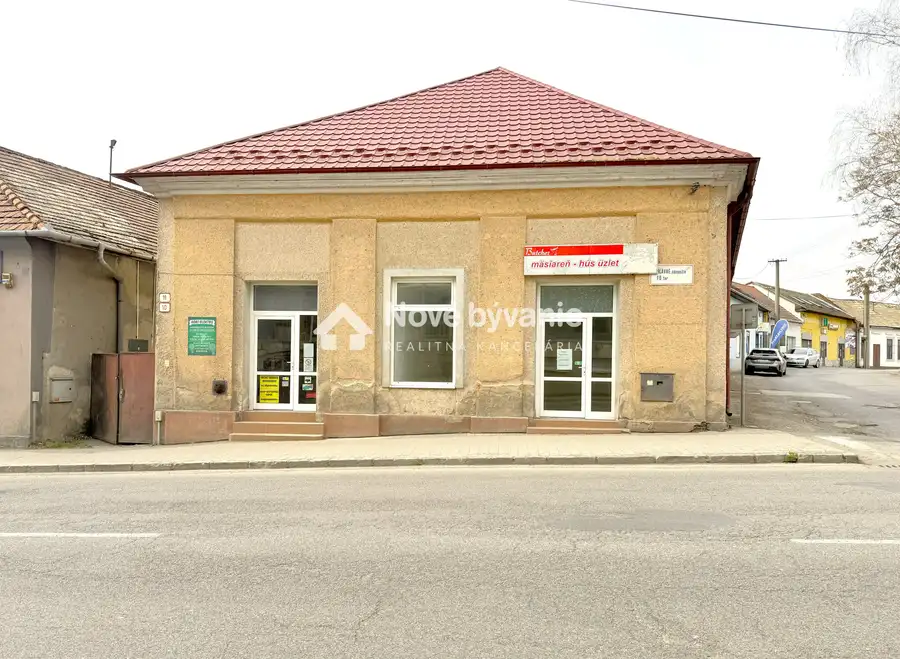
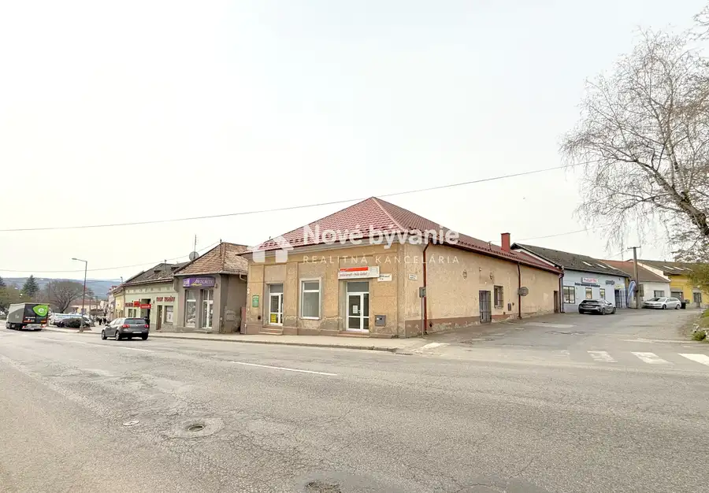
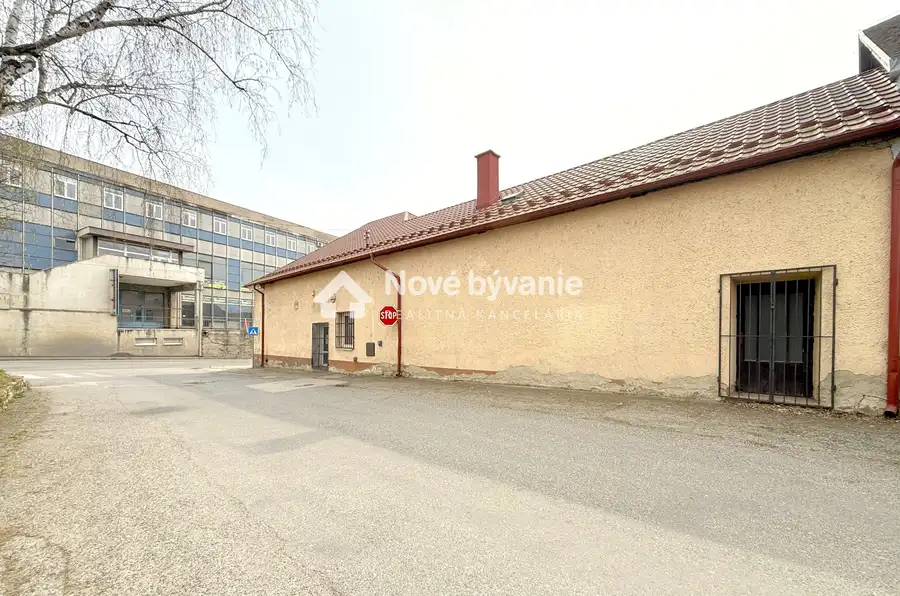
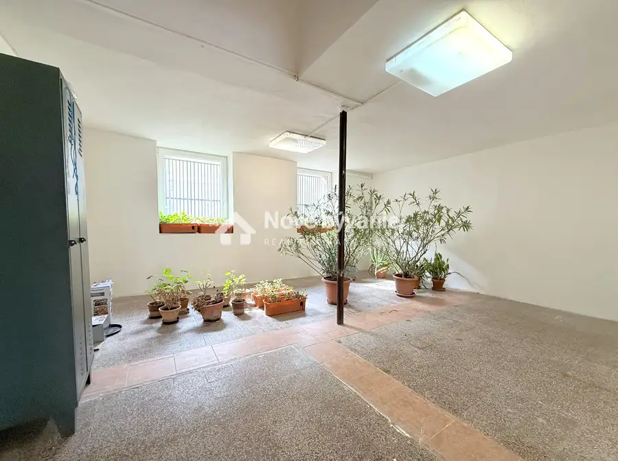
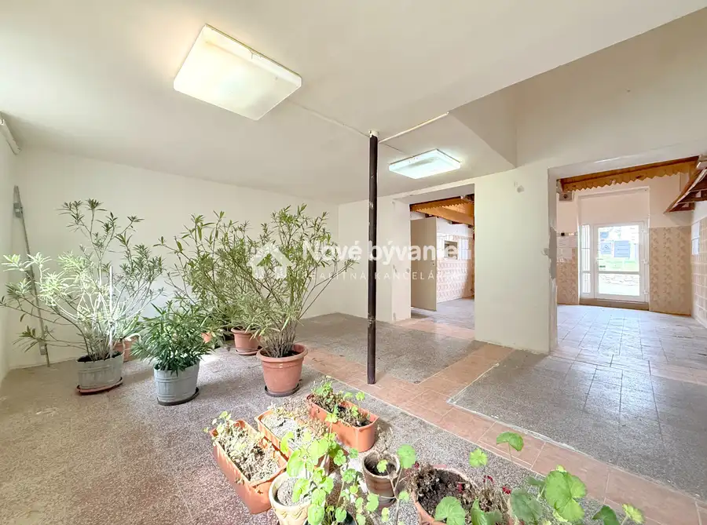
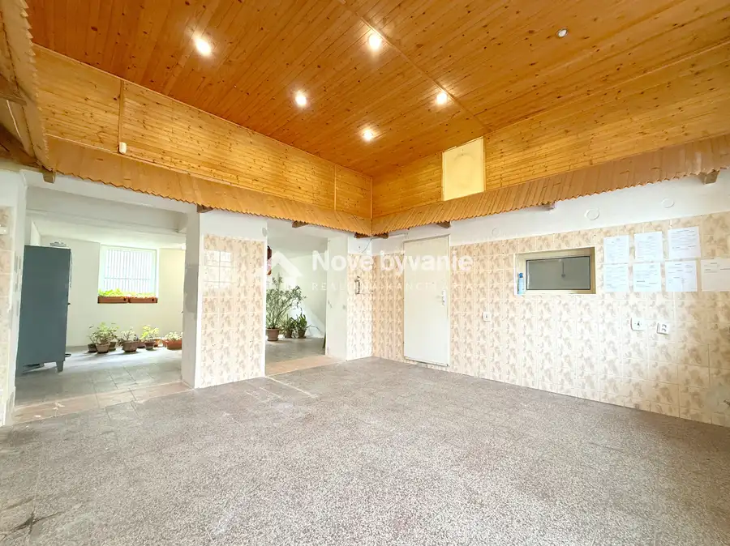
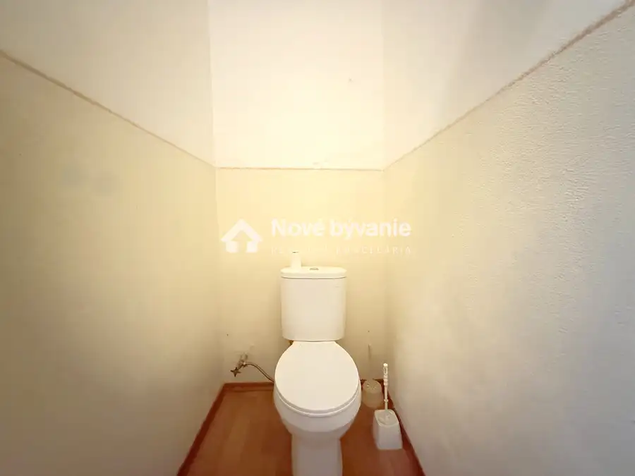

Predaj, obchodná budova v centre mesta-Šahy(N220-18-FRAD)
Šahy







- StavČiastočná rekonštrukcia
- VlastníctvoOsobné
O nehnuteľnosti
N220-18-FRADInvestícia, ktorá dáva zmysel.Uvažujete nad priestorom pre vlastné podnikanie alebo hľadáte nehnuteľnosť s potenciálom pravidelného výnosu?Táto ponuka priamo v centre mesta Šahy vám otvára dvere k obom možnostiam. Je len na vás, ktorú z nich využijete naplno.Link na video obhliadku: youtu.be/OBZwhaDMkVs?si=-LX9uMx5Mju9z1AbPonúkame vám na predaj obchodnú budovu nachádzajúcu sa v priamom centre hraničného mesta Šahy v okrese Levice. Nehnuteľnosť sa nachádza hneď pri frekventovanej ceste, čo zabezpečuje výbornú viditeľnosť a dostupnosť, pričom parkovanie je možné priamo pri budove.Objekt je ideálny pre rôzne podnikateľské účely, ako sú obchody, služby, kancelárie, gastro prevádzka alebo aj kombinácia podnikania s bývaním.Budova je postavená z pálenej tehly a kameňa a prešla čiastočnou rekonštrukciou, v rámci ktorej bola menená strecha, okná aj dvere. Disponuje viacerými vstupmi, čo ponúka flexibilitu využitia jednotlivých priestorov. Z prednej strany sú dva samostatné vstupy a jedna brána, ktorá vedie do dvora, kde sa nachádza terasa s ďalším vstupom do budovy. Z bočnej strany sú k dispozícii ďalšie dva vstupy.Dispozične pozostáva zo šiestich obchodných priestorov, pričom päť z nich má samostatný vstup. Súčasťou sú dve toalety, skladový priestor a klenbová pivnica, ktorá môže slúžiť napríklad ako sklad alebo štýlový doplnok pre podnikanie.Vykurovanie je riešené plynovými gamatkami.Cena nehnuteľnosti je 180 000 €. Pri rýchlom jednaní sa dohode na cene nebránime. V cene je zahrnutý kompletný realitný servis a suma je schválená majiteľom. Samozrejmosťou je aj pomoc s financovaním, aby ste si kúpu vedeli zabezpečiť jednoducho a pohodlne.Kontakt:František Adamko☎️ 0949 575 495✉️ adamko@novebyvaniereality.sk
Parametre
- Druh
- Obchodné priestory
- Dátum zverejnenia
- 27. 03. 2026
- Elektrina
- Na pozemku, Na pozemku - 230 V, Na pozemku - 400 V
- Energie
- 200
- Stav nehnuteľnosti
- Čiastočná rekonštrukcia
- Typ
- Predaj
- Typ konštrukcie
- Zmiešaná
- Vlastníctvo
- Osobné
- Voda
- Na pozemku - Diaľkový vodovod, Pri pozemku - Verejný vodovod
- Vybavenie
- Terasa, Pivnica
- Vykurovanie
- Lokálne
- Úžitková plocha
- 0 m²